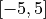
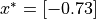
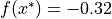
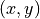

Quick Start¶
This is a quick start tutorial, containing code snippets to show Tuun usage.
Minimal example¶
Here is a minimal working example, which uses Tuun to optimize a function via Bayesian optimization. Tuun is instantiated, a search space is specified (a one-dimensional continuous Euclidean space within ), a function is defined, and Tuun’s minimize_function is called.
from tuun.main import Tuun
# instantiate Tuun
tu = Tuun()
# set search space
search_space = ('real', [-5, 5])
tu.set_config_from_list(search_space)
# define function to optimize
f = lambda x: x[0] ** 4 - x[0] ** 2 + 0.1 * x[0]
# minimize function over search space
result = tu.minimize_function(f, 20)
This should find a minima at roughly: , where . For details on specifying the search space, see this page.
Additional options¶
Tuun also allows for fine-grained configuration of individual components and search spaces.
from tuun.main import Tuun
config = {
# configure tuning backend
'backend': 'probo',
# configure model
'model_config': {'name': 'simplegp', 'ls': 3.0, 'alpha': 1.5, 'sigma': 1e-5},
# configure acquisition function
'acqfunction_config': {'name': 'default', 'acq_str': 'ei'},
# configure acquisition optimizer
'acqoptimizer_config': {'name': 'default', 'max_iter': 200},
# configure domain
'domain_config': ('real', [-5, 5]),
}
tu = Tuun(config)
f = lambda x: x[0] ** 4 - x[0] ** 2 + 0.1 * x[0]
result = tu.minimize_function(f, 20)
For details on configuring components, see this page, and for details on specifying the search space, see this page.
Initialize with a dataset¶
We often want to start optimization with an initial dataset of  pairs. The script below shows how to initialize Tuun with a given dataset. In this case, we initialize with a dataset of 3 function queries.
from tuun.main import Tuun
# instantiate Tuun
tu = Tuun()
# set search space
search_space = ('real', [-5, 5])
tu.set_config_from_list(search_space)
# define function to optimize
f = lambda x: x[0] ** 4 - x[0] ** 2 + 0.1 * x[0]
# set initial dataset
data = {'x': [[0.0], [1.0], [2.0]], 'y': [6.0, 3.0, 4.0]}
# minimize function over search space
result = tu.minimize_function(f, 20, data=data)